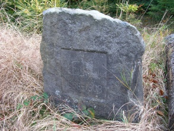
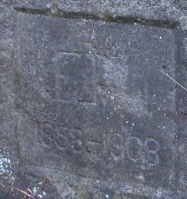

| Lage des Ortes: | südwestlich von Varnsdorf. |
| Bezirk: | Děčín |
| Herrschaft: | Rumburg (Rumburk) |
| Forstamt: | Rumburg (Rumburk) |
| Forstrevier: | Niedergrund (Dolní Podluží) |
| Evidenznummer: | 074b |
| Abmessungen: | nicht festgestellt |
Beschreibung:
Gedenkstein mit der Inschrift: „FJL 1858-1908“.
2011 - Die Fotografien hat Herr Marek Krištof geschickt.


Den Stein beschreibt Karel Stein in dem Buch Flurdenkmäler unserer Heimat:
„Und doch leben noch Zeugen der adeligen Zeiten. Es sind hunderttausende von Bäumen in den Waldbeständen des ganzen Niederlandes. Sie wurden vom fürstlichen Waldpersonal noch vor der Bodenreform oder gar zur Zeit der Habsburgmonarchie angepflanzt. Viele sind zwar schon gefällt und verkauft worden, zahlreiche bilden aber bis heute das Waldkleid der heimischen Bergwelt. Ein alter Bestand von Douglastannen und Lärchen im Meisengrund erinnert sich bestimmt noch an die Zeiten der Liechtensteiner. An einer Stelle bilden diese Bäume eine winzige Lichtung, in deren Mitte ein kleines Denkmal aus Sandstein verborgen ist. Die einfache Inschrifttafel mit den Initialen FJL und den Jahreszahlen 1858 - 1908 ist heutzutage nichtssagend. Wenn Sie aber aufmerksamer hinschauen, werden Sie feststellen, dass die stattlichen Baumriesen symmetrisch im Halbkreis gepflanzt sind und an dem Denkmal Wache halten. Sie erlebten noch die fürstlichen Zeiten und erinnern sich, genauso wie der letzte "Ritter vom Tollenstein" Münzberg, an unseren letzten Liechtensteiner Johann, dessen fünfzigjähriges Regierungsjubiläum das Denkmal vor dem Vergessen bewahrt.15) Aber nicht nur die alten Nadelbäume umgeben den mit Flechten bewachsenen Stein. Im Laufe der vielen Jahre sind aus ihren Samen neue Bäumchen aufgewachsen, die einmal ihren Platz einnehmen werden und hier wieder treu Wache stehen. Sie sind nicht wie wir Menschen, sie haben ein besseres Gedächtnis.
15) Wir finden das kleine Denkmal, wenn wir von der Tollensteinstraße oberhalb vom Bahnhof Tannenberg rechts die Goldgrubenstraße abzweigen. Es steht etwa hundert Meter vor der Einmündung dieser Straße in die Schöberstraße. Dem Fürsten Johann II. von und zu Liechtenstein (geb. 1840, verst. 1929), der 1858 zu regieren begann, war auch anlässlich des 40-jährigen Regierungsjubiläums eine Gruppe von Basaltsäulen inmitten einer Eichenpflanzung an einem Waldwege in der Nähe des Rauchberges bei Schönlinde gewidmet (siehe Anm. 12, S. 135). Diesem Fürsten verdankte Münzberg die Bewilligung zur Erbauung einer Restauration auf dem Tollenstein. Nach der Zerstörung der Burg bediente sich die Bevölkerung der umliegenden Ortschaften des billigen Baumaterials und war auch zum Teil auf der Suche nach verborgenen Schätzen. Die fürstliche Verwaltung sah sich gezwungen, "alles weitere Zerstören der Ruinen" bei Strafe zu untersagen, was mit dem Bau einer Gastwirtschaft endlich ein Ende nahm. (A. Hockauf: Heimatskunde des pol. Bez. Rumburg, S. 182. Rumburg 1885.) Der bescheidenen Restauration in der Kapellenruine von 1865 folgte schon im Jahr darauf eine Gastwirtschaft im Schweizer Stil anstelle der heutigen Baude.“
Literatur:
Karel Stein: Flurdenkmäler unserer Heimat. Streifzüge im Lausitzer Gebirge und in der Böhmischen Schweiz.
Verweise auf externe Web-Seiten:
http://www.luzicke-hory.cz/info/index.php?pg=knpomn14d - Text aus dem Buch Flurdenkmäler unserer Heimat von Karel Stein.
http://www.luzicke-hory.cz/mista/index.php?pg=zmmisdd - Meisengrund (Meissnergrund).
{kind=link}
{kind=link}